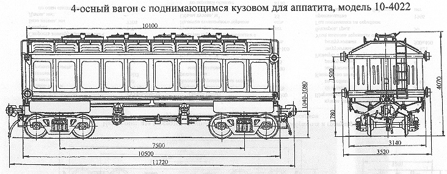

Назначение: для перевозки аппатитового концентрата в места массового потребления
Параметры
| Номер проекта | 4022.00.000-0 |
| Технические условия | ТУ24-05-542-85 |
| Модель вагона | 10-4022 |
| Тип вагона | 900 |
| Изготовитель | ДВЗ им. Газеты "Правда" |
| Грузоподъемность, т | 66,5 |
| Масса тары вагона, т | 26,5 |
| Нагрузка: статическая осевая, кН(тс) |
228(23,25) |
| погонная, кН/м(тс/м) | 77,7(7,9) |
| Скорость конструкционная, км/ч | 120 |
| Габарит : с установленными бегунками |
Т |
| с снятыми бегунками | 1-Т |
| База вагона, мм | 7500 |
| Длина, мм: по осям сцепления автосцепок |
11720 |
| по концевым балкам рамы (длина рамы) | 10500 |
| Ширина максимальная, мм: | 3520 |
| Высота от уровня верха головок рельсов максимальная, мм | 4070 |
| Количество осей, шт. | 4 |
| Модель 2-осной тележки | 18-100 |
| Наличие переходной площадки | нет |
| Наличие стояночного тормоза | есть |
| Объем кузова, м³ | 55 |
| Длина кузова внутри, мм | 9940 |
| Ширина кузова внутри,мм: вверху |
2700 |
| внизу | 2800 |
| Высота подъема кузова кузова над нижней рамой при разгрузке на эстакаде, мм | 650 |
| Количество люков,шт.: загрузочных |
4 |
| разгрузочных | 4 |
| Размеры разгрузочного люка в свету, мм | 4875х970 |
| Год постановки на серийное производство | 1985 |
| Возможность установки буферов | нет |